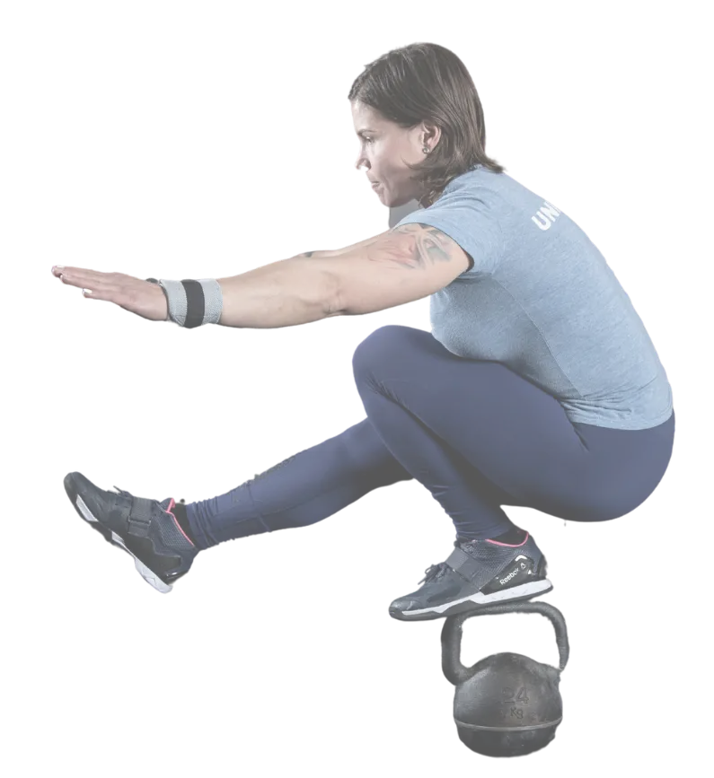

A CrossFit célja egészen sokrétű, akárcsak maga a sportág. Nem arra
törekszik, hogy a lehető legtöbb képességet és kompetenciát
elsajátítsd egy adott sportban, hanem hogy egy általános fizikai
erőnlétet és felkészültséget érj el. Ez a fajta edzésmód növeli a 10
alapképességet: hajlékonyság, agilitás, erő, pontosság, kitartás,
teljesítmény, koordináció, állóképesség, gyorsaság és egyensúly.
Ehhez pedig többféle mozgásformát kombinál egy edzésen belül:
futást, gimnasztikát, súlyemelést, és változó intenzitású anaerob
mozgásformákat.
Ahhoz pedig, hogy mérhető legyen a fejlődés,
olyan köredzéseket hoztak létre, amelyek mennyiségben vagy időben
könnyen ellenőrizhetőek.
A CrossFit célja a funkcionális erő kialakítása, ami az élet
más területein is kamatoztatható. Ezzel a mozgásformával ugyanis nem
csak a fizikai kondíció válik tökéletessé, de mentálisan is
megedződünk. A CrossFit olyan koncentrációt, kitartást és ugyanakkor
lelki nyugalmat ad gyakorlójának, amilyet kevés sport képes
nyújtani. Ennek a mozgásformának az alapja, hogy az emberi test az
edzés során állandóan változó ingereknek van kitéve.
Sport – Teljesítmány
Súlyemelés – a súlyok megfelelő irányítása/használata
Gimnasztika – Saját testünk térbeli irányítása és kontrollja
Erő és állóképesség – Kardió/légzési és metabolikus
kondicionálás
Táplálkozás – ez a testünk üzemanyaga és alapja
annak, hogy hogyan teljesítünk
A CrossFit sok kezdőt elriaszthat, amikor különböző médiafelületeken olyan gyakorlatokat lát, melyek egy átlagos ember számára kivitelezhetetlennek tűnnek. Való igaz, a CrossFitben számtalan nagy ügyességet igénylő feladat is előfordulhat, azonban nincs még egy olyan sport, ahol ennyire egyedi képességekre szabnák az edzéseket. Bártan kijelenthetjük, hogy a számtalan módosítási lehetőségnek köszönhetően egy CrossFit edzést kicsitől egészen az idős korosztályig mindenki teljesíteni tud, radásul a teljesen edzetlentől a versenysportolóig mindenki ugyanannyira fog elfáradni, így ez a sport arra is idelis, hogy eltérő képességű és edzettségi állapotú párok, családtagok vagy barátok együtt, közösen eddzenek!
A legjobb módja, hogy megismerkedj velünk: ha kipróbálsz minket. Mi bízunk abban, hogy tetszeni fog, amit látsz, ezért egy ingyenes próbaleckét biztosítunk neked. Ehhez nem kell mást tenned, mint a lenti gombra kattintva kitölteni jelentkező űrlapunkat.
Jelentkezz ingyenes próbaleckére!

Az első órákon semmi másra nem lesz
szükséged, mint egy kényelmes edzőruhára, sportcipőre, törülközőre és
persze innivalóra.
Később természetesen lesz néhány kiegészítő felszerelés, amit
érdemes majd beszerezned annak érdekében, hogy segítse az edzésedet.
Ilyenek például:
AFAP: As fast as possible: Amilyen gyorsan csak lehetséges
Air Squat: Súly nélküli, szabad guggolás
AMRAP: As many
rounds as possible: Annyi kör, amennyi csak lehetséges, bizonyos idő
alatt.
Back Squat / BSQ: Tarkón guggolás
Bar Muscle Up /
BMU: Függeszkedő rúdon feltornázkodás, egy húzódzkodásból tovább
lendített tolódzkodás
Barbell / BB: Súlyzó rúd
Benchmark
WOD: CrossFit HQ által jegyzett sztenderd feladatsor
Bench Press:
Fekve nyomás
Box: Maga az edzőterem
Box Jump: Dobozra ugrás
Burpee: 5 ütemű fekvőtámasz
Bodyweight / BW: Saját testsúly
Chipper: Olyan feladatsor, amiben sok féle gyakorlat
Chest
to bar pullup / C2B: Mellkas a rúdhoz húzódzkodás, a mellkasnak
érintenie kell a függeszkedő rudat
Clean and Jerk / C&J: Felvét és
lökés
Clean / CL: Felvét, a súlyzó mellkasra való felvétele
Cluster / Squat Clean thruster: Beüléses felvétellel végrehajtott
thruster
Dinamic Effort / DE: Dinamikus erőfejlesztés
Deadlift / DL : Elemelés/felhúzás
DEATH BY: Futó óra
mellett, minden perc kezdetén növekvő ismétléssel kell végrehajtani a
feladatot, addig, amíg az adott percben be tudod fejezni a gyakorlatot.
Dip / Ring dip: Tolódzkodás / gyűrűn tolódzkodás
Double
Unders: Dupla tekerés ugráló kötéllel, kettőt hajtasz egy ugrás alatt
Dumbell Bench Press: Kézi súllyal való fekve nyomás
Dumbell
/ DB: Kézi súly
EMOM: Every minute on the minute: minden perc
kezdetén munka. Egy bizonyos ismétlés számot, vagy max ismétlés számot
kell egy bizonyos idő alatt teljesíteni akár több gyakorlatból is 1
percen belül. Ha befejezed az 1 perc letelte előtt a munkát, a perc
maradék ideje pihenő, és ez ismétlődik adott ideig.
For Time / FT:
Időre bizonyos feladat
Front Squat: Mellen guggolás
Hang
Clean: Ölből felvét, a súlyzó nem kerül a térd vonala alá
Hang
Snatch: Ölből szakítás, a súlyzó nem kerül a térd vonala alá
HSPU:
Hand stand push-ups: Kézállásban nyomás
Jerk: Lökés fej fölé
Jump over the box: Doboz átugrás
KB American Swing / AM
Swing: Kettlebell lengetés fej fölé
KB Clean and Jerk: Kettlebell
felvét és lökés
KB Military Press: Kettlebell katonai nyomás
KB Snatch: Kettlebell szakítás
KB Swing: Kettlebell lengetés
KB: Kettlebell
Ladder: Létra lehet súlyban, vagy ismétlésben
Lunge: Kitörés
ME: Max effort, maximális terhelés
METCON: Metabolikus kondíció
Muscle up / MU: Feltornázkodás
gyűrűn
NO REP: Hibásan végrehajtott gyakorlat, amit nem számítunk
ismétlésnek!
Over Head Squat / OHS: Fej feletti tartásban guggolás
PR: Personal Record: Egyéni csúcs
Pull-up: Húzódzkodás
Push Press / PP: Láblökéses nyomás
Push-ups: Fekvőtámasz
Rep: Ismétlés
RFT: Round for time: Meghatározott körök minél
rövidebb idő alatti teljestíése
RM: Repetition Maximum: Maximális
terhelésű ismétlés
Row: Evezés ergométeren
RX: Feladatok
nehézségi szintjeit jelöli. A kiírás szerinti, nem skálázott/módosított
feladat.
Scaled: módosított: Az RX gyakorlatsor könnyített
változata (kisebb súly, könnyebb gyakorlat, stb.)
Shoulder Press:
Vállról nyomás
Sit-up: Felülés
Snatch High Pull: Szakító
széles fogással felhúzás mellkasig
Snatch Pull: Szakító széles
fogással kiállás
Snatch: Szakítás
Skill: Készség mint pl.
Kézenjárás, dupla tekerés stb.
Split Jerk, Split Snatch: Ollózva
lökés, ollózva szakítás
Squat Clean and Jerk: Beüléses felvét és
lökés
Squat Clean: Beüléses felvét
Squat Snatch: Beüléses
szakítás
Strength: Erő, erőfejlesztő gyakorlatok
Sumo
Deadlift: Szűk fogású, széles terpesz állásban történő elemelés
SDHP / Sumo Deadlift High Pull: Szumó elemelés állig húzással
TABATA: 20mp munka / 10 mp pihenő jellegű általában 8 kör / 4
gyakorlat formában
Time Cap: Időkorlát az adott feladatsorra
Toes to bar / T2B: Függeszkedésben láb emelés a függeszkedő rúdhoz
Turkish Getup / TGU: török felállás kettlebellel
Thruster:
Elöl guggolásból való fej fölé juttatása a súlyzónak
Weightlifting: Súlyemelés
W.O.D.: Workout of the day: A nap
edzése